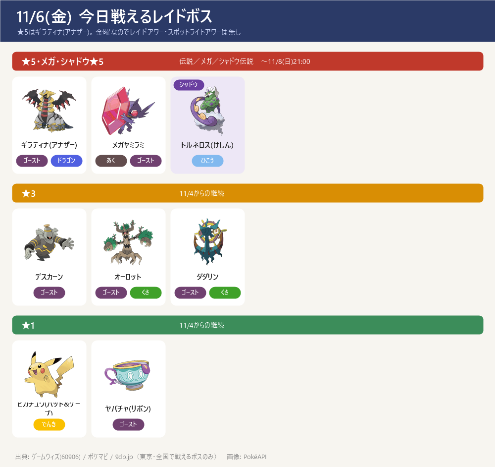
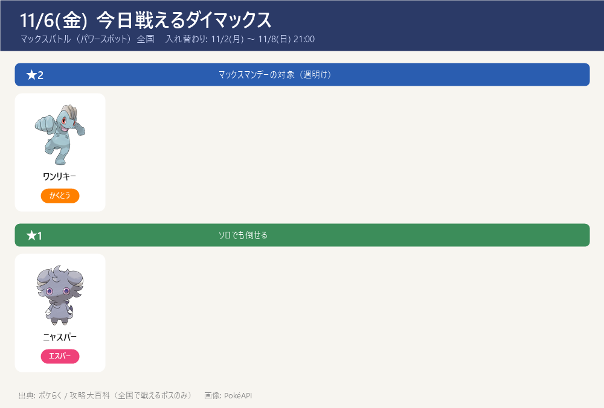
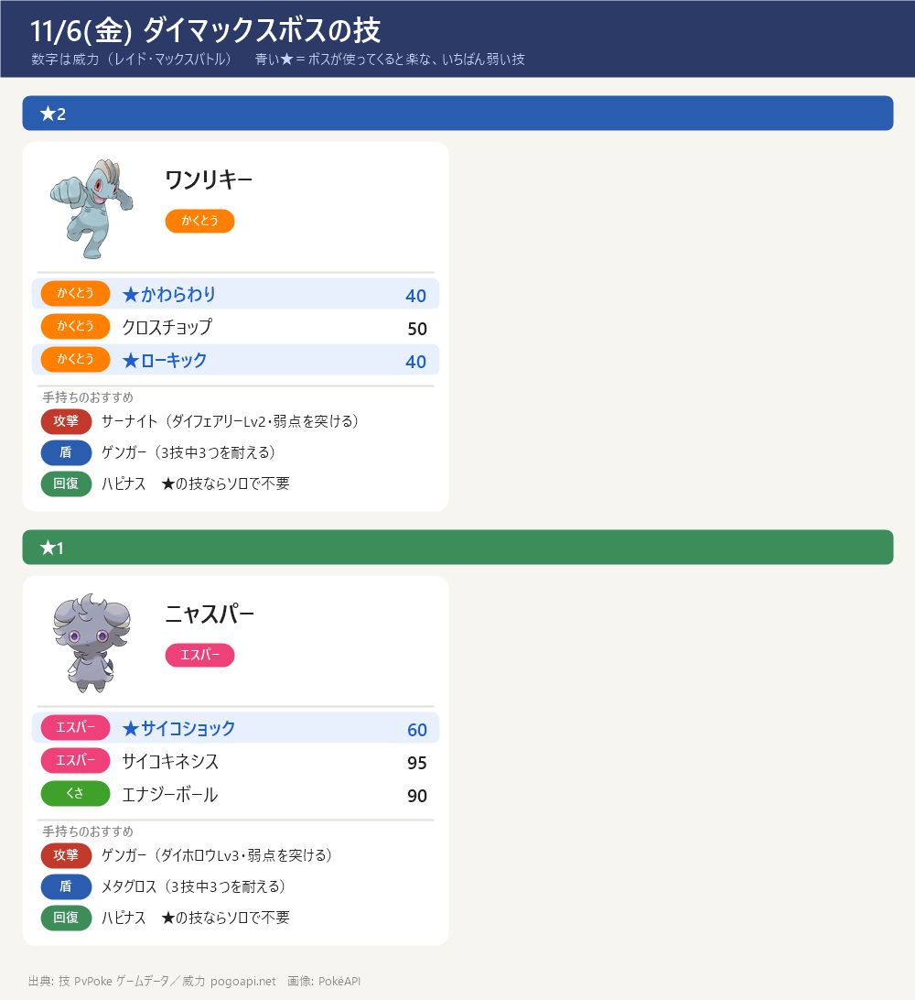

今日のポイント
- ★5はギラティナ(アナザー)（色違いあり・11/8(日)21:00まで）。弱点：ゴースト・あく・こおり・ドラゴン・フェアリー技
- シャドウ★5はシャドウトルネロス(けしん)（色違いあり）。弱点：いわ・こおり・でんき技。メガレイドはメガヤミラミ（色違いあり）
- マックスバトルは全国でダイマックスワンリキー（★2・かくとう）とダイマックスニャスパー（★1・エスパー）。参加に MP（ワンリキーは400）とマックス粒子を使う
- ワイルドエリア2026仙台（宮城県・11/6～11/8）開催中。ザシアン／ザマゼンタや特別なマックスバトル（ジュラルドン・ディアルガ・パルキア）は仙台の現地（宮城県内）限定で、東京では戦えない（下の「サイトで違っていた点」参照）
- 11/9(月)〜 ワイルドウィーク2026で、ザシアン／ザマゼンタが全国の伝説レイドに登場予定。伝説対策とボールの準備を
今日戦えるレイドボス
★5はギラティナ(アナザー)。金曜なのでレイドアワー・スポットライトアワーは無し
- ★5のギラティナ(アナザー)・シャドウトルネロス(けしん)・メガヤミラミはいずれも色違いあり。★3・★1のボスも色違いが出ることがある

今日戦えるダイマックス
マックスバトル（パワースポット）全国 入れ替わり: 11/2(月) ～ 11/8(日) 21:00
- キョダイマックスジュラルドン・ダイマックスディアルガ・ダイマックスパルキアはワイルドエリア2026仙台（宮城県内）限定で、東京のパワースポットには出ない
- 【各ボスのスペシャルアタック候補】（下のカード。数字はレイド・マックスバトルでの威力。★＝ボスが使ってくると楽な、いちばん弱い技（ボスと同じタイプの技は1.2倍で計算。こちらのポケモンとの相性は見ていない）。戦闘中に技名が出たら受け役を合わせる）


サカキ対策（シャドウゼクロム）：攻略ページへ（別ページ）
締め切り・やること：まとめページへ（別ページ）
この先の予定（タップで開閉）
- 11/9(月)〜11/15(日) ワイルドウィーク2026／ワイルドエリア2026グローバル。ザシアン(けんのおう)・ザマゼンタ(たてのおう)が全国の伝説レイドに登場（色違いあり）
- 11/9(月)・11/10(火) ザシアン／ザマゼンタのレイドアワー
- 11/11(水) 全国のマックスバトルがダイマックスレジスチルに入れ替わり
- 11/14(土) ダイマックスディアルガが全国のマックスバトルに登場（この日限定）（マックス粒子を貯めておく）
サイトで違っていた点（タップで開閉）
- ワイルドエリア2026仙台（宮城県・11/6～11/8）限定: ★5 ザシアン(けんのおう)・ザマゼンタ(たてのおう)、★3 ジャケットカイリキー、マックスバトル キョダイマックスジュラルドン・ダイマックスディアルガ・ダイマックスパルキア。現地（宮城県内）限定で東京では戦えないため本編に入れていない（出典: ポケらく仙台ページ post162567・9db）
- ゲームウィズのレイド表は切り替え直後（11/6 5:00）に一時的に古いラインナップのままだった → ポケマピ(X)・9db・検索で現在の内容を確認して記載
- ★3「デスカーン・オーロット・ダダリン」／★1「ピカチュウ(ハット&ケープ)・ヤバチャ(リボン)」は11/4からの継続（ポケマピ）
- ダイマックスボスの技候補はゲームデータ(PvPoke)から（おんがえし・やつあたりは除外）、威力は pogoapi.net
出典: pokemongo.gamewith.jp（出現中レイド 60906）／pokemongo-raku.com（ポケらく・仙台 post162567・11月まとめ post164974）／pokemon.gamepedia.jp/go（攻略大百科）／9db.jp/pokemongo（2308・20859・4351）／X: ポケマピ／pvpoke.com ゲームデータ（技候補）
画像: PokéAPI ／ 2サイト以上で一致した情報だけを載せています